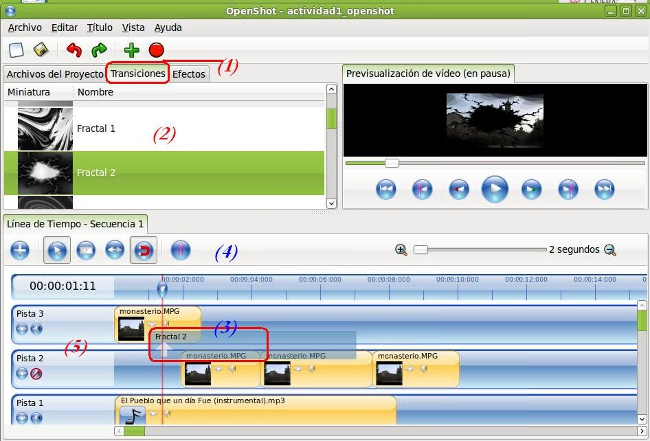

Edición de Audio y video
Introducción
En este apartado del Editor de Video Openshot procedemos a explicar como aplicar diversos efectos a nuestros clips, tanto para mejorar su aspecto como para distorsionarlo en otras ocasiones.
La aplicación de los efectos implica trabajar con nuestros Archivos de Proyectos, nuestra línea de tiempo y el uso de las diferentes pistas para lograr un resultado final renderizado.

Trabajaremos en la exportación con diferentes perfiles y observar los resultados obtenidos.
Jo.R.C.A. 2004 - 2011

Edición de Audio y Video con Software Libre by José Ramón Cerdeira Alonso is licensed under a Creative Commons Reconocimiento-No comercial-Compartir bajo la misma licencia 3.0 España License